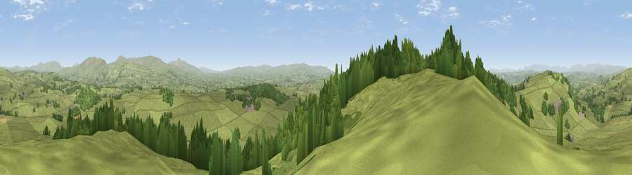

Viewpoint near Hutton Roof
#4227 in England · top 14% of its area beats it · near Hutton RoofThe view, rendered

A 360° render of this exact spot computed from the terrain model, tree cover and land cover — summer colours, afternoon light, calibrated against photographs of famous viewpoints. Real trees, hedges and buildings will differ in detail.
The panorama
Grey silhouette: terrain skyline in each direction (720 bearings, Earth curvature and refraction included). Dashed green: skyline with trees (+15 m) and buildings (+8 m) as obstacles. Blue strip: how far the ground is visible on each bearing.
Where the view opens
Wedge length = distance to the farthest visible ground on that bearing (vegetation-aware). Rings at 10, 25 and 50 km.
What fills the view
82% grassland · 17% woodland ·
Angular shares of the visible panorama (visual magnitude), not map area. Landscape diversity 0.23 (0–1 Shannon).
Key numbers
More beautiful places nearby
The staircase of upgrades: each row has a higher view potential than everything closer. Driving times are estimates from straight-line distance, calibrated against real road routing — check an actual route before setting out.
| Place | Direction | Drive | Score |
|---|---|---|---|
| Viewpoint near Dalton | SW · 1 km | ~3 min | 73.0 |
| Viewpoint near Lupton | NW · 2 km | ~6 min | 74.7 |
| Farleton Fell [Holmepark Fell] | NW · 3 km | ~7 min | 77.7 |
| Viewpoint near Lupton | NW · 3 km | ~8 min | 78.7 |
| Warton Crag | SW · 9 km | ~18 min | 83.2 |
| Viewpoint near Grange-over-Sands | W · 17 km | ~30 min | 83.4 |
| Viewpoint near Finsthwaite | WNW · 20 km | ~34 min | 90.3 |
| The Knoll | S · 390 km | ~375 min | 91.0 |
54.19836, -2.67019 · source: screening · position refined by local search. Computed location — check access rights before visiting.